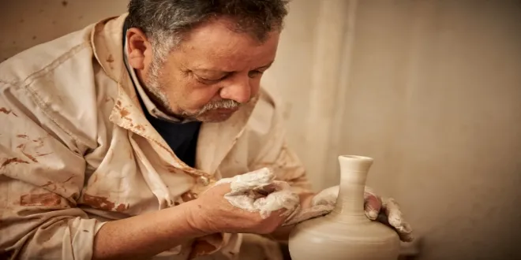
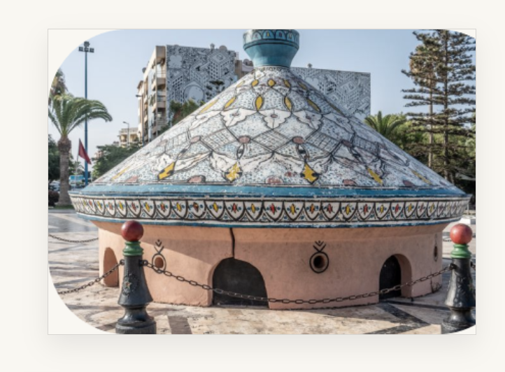
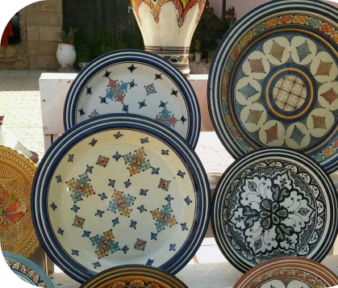
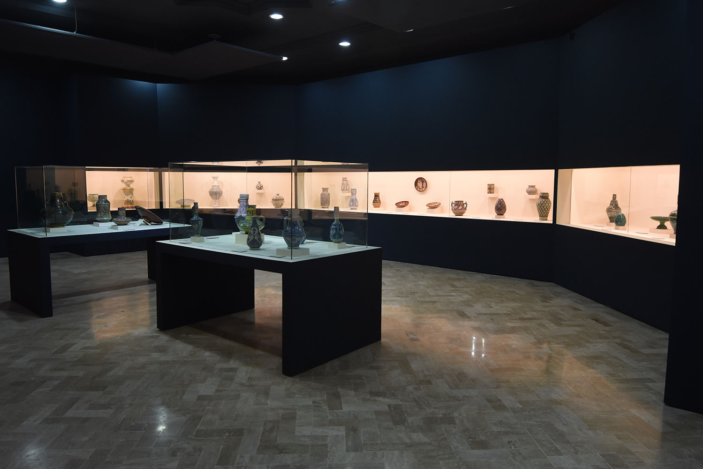
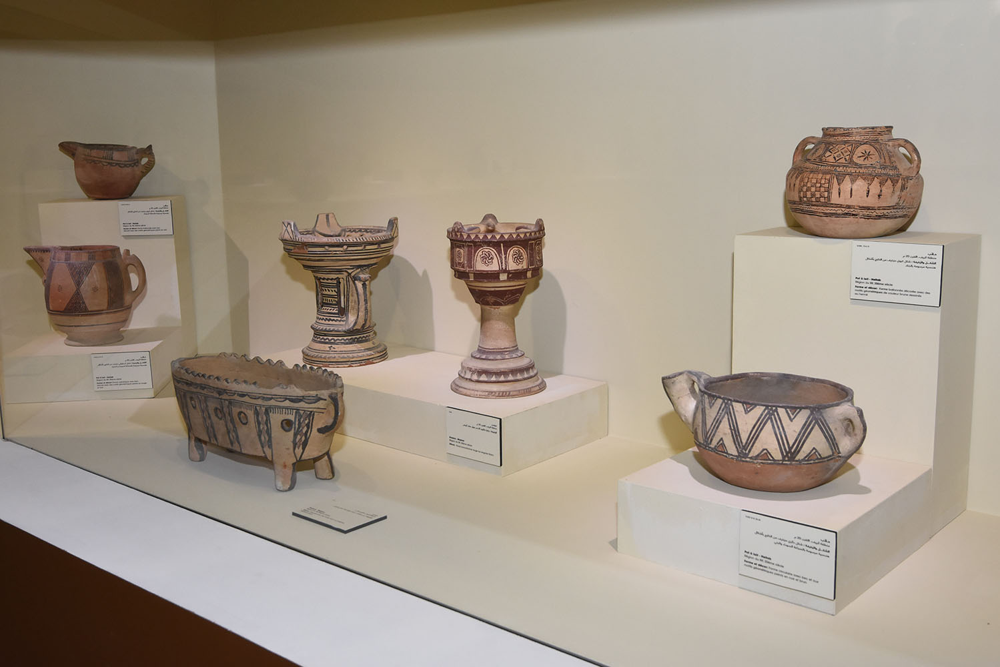
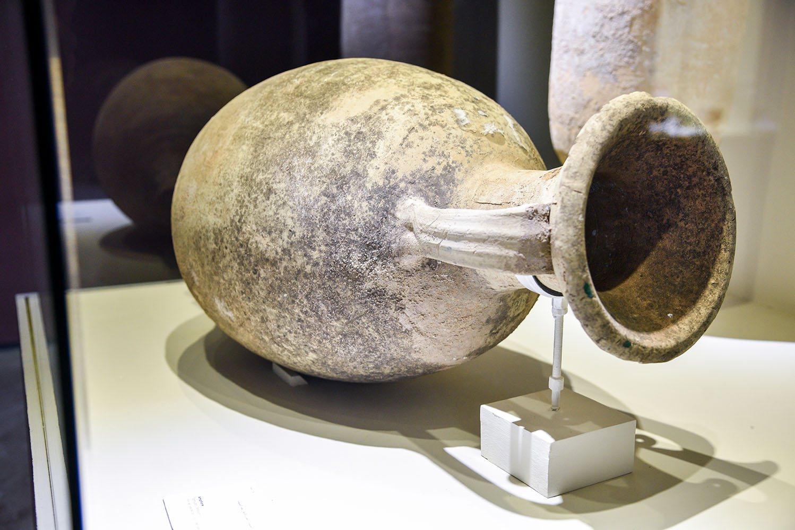
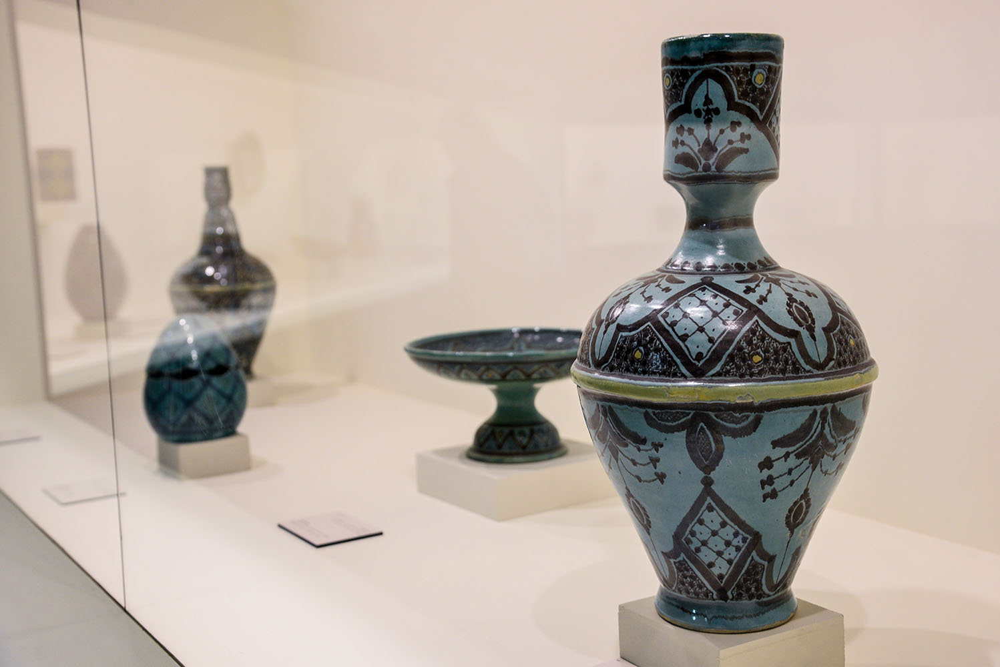
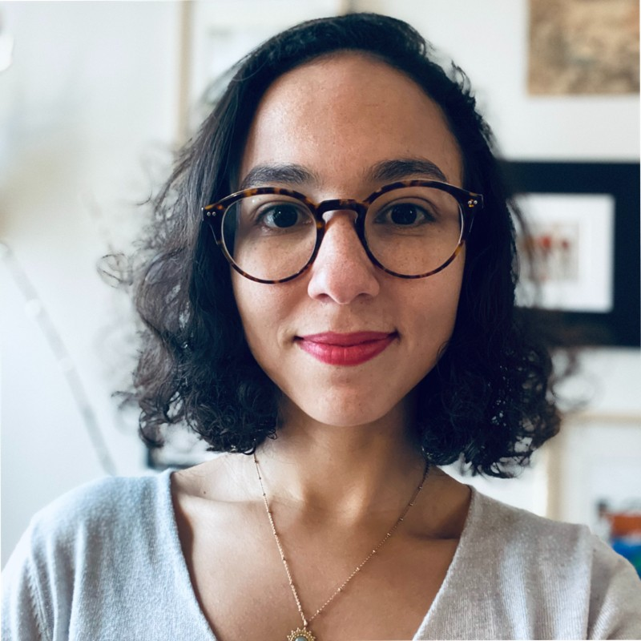

Ahmes Saghrini
Je suis un artisan passionne par la poterie. Chaque jour, je modele l argile avec soin pour creer des oeuvres uniques qui racontent des histoires a travers leurs formes et leurs textures.
Le plus grand tajine de boulettes de sardines du monde a ete presente le samedi 10 juillet 1999 a Safi, sur la place Mohamed V, a l initiative de l Association des operateurs economiques de la capitale d Abda.

La poterie de Safi est un type de poterie ou de porcelaine produite dans la ville de Safi au Maroc. La poterie de Safi est fabriquee a la main par des artisans locaux utilisant des techniques traditionnelles. Cette poterie se distingue par ses designs uniques qui refletent les traditions et la culture marocaines.






Je suis un artisan passionne par la poterie. Chaque jour, je modele l argile avec soin pour creer des oeuvres uniques qui racontent des histoires a travers leurs formes et leurs textures.

Je suis experte en poterie et je consacre ma vie a enseigner l art de la ceramique. Ma passion transparait dans chaque atelier, ou je guide les apprentis.
Je suis une ceramiste passionnee et je trouve dans la poterie une source d inspiration infinie. Je donne vie a des pieces magnifiques, empreintes de cet artisanat ancestral.
Le prix d un billet d entree est de 20 dirhams pour les adultes, 3 dirhams pour les enfants et 10 dirhams pour les jeunes etudiants. Les etudiants peuvent visiter le musee gratuitement le mercredi.
La ville de Safi a une histoire riche dans la fabrication de poteries qui remonte a des siecles. Cette tradition a ete transmise de generation en generation.
Le Musee National de la Ceramique de Safi offre aux visiteurs l occasion d explorer l histoire, l art et la culture de la ceramique dans cette region marocaine.